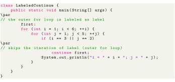

Next: Object-Oriented Programming Up: Java continue Statement Previous: Java continue Statement Contents
Till now, we have used the unlabeled continue statement. It is used to terminate the innermost loop and switch statement. However, there is another form of continue statement in Java known as labeled contine. We can use the labeled contine statement to terminate the outermost loop as well.
Here, the continue statement is skipping the current iteration of the labeled statement (i.e. outer loop). Then, the control of the program goes to the next iteration of the labeled statement (outer loop)

Output:

In the above example, the labeled continue statement is used to skip the current iteration of the loop labeled as first.

Here, we can see the outermost for loop is labeled as first,

Hence, the iteration of the outer for loop is skipped if the value of i is 3 or the value of j is 2.